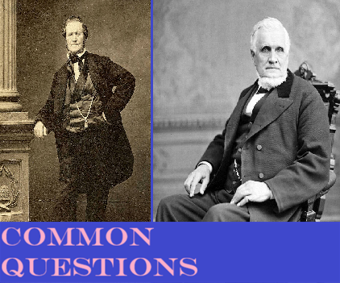
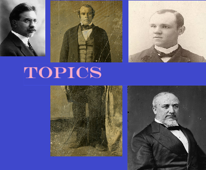
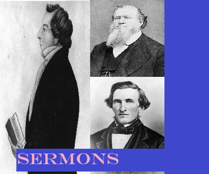
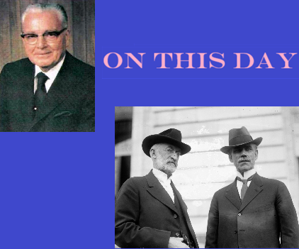

Organized by Last Name
A-Z





Did we get something wrong? Contact us: Email
Do you want to learn more about the Gospel? Come and See!
The Favicon is the USVA headstone for Latter-Day Saints
My other works: Biblical Mormonism, Mormon Martyrs, Latter-Day Controversies